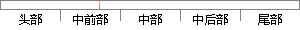

socket本质是编程接口(API)，对TCP/IP的封装，TCP/IP也要提供可供程序员做网络开发所用的接口，这就是Socket编程接口；
片段位置图

相似结果|
1
原句片段：socket本质是编程接口(API)，对TCP/IP的封装，TCP/IP也要提供可供程序员做网络开发所用的接口，这就是Socket编程接口；
相似片段 1：Socket socket本质是编程接口(API),对TCP/IP的封装,TCP/IP也要提供可供程序员做网络开发所用的接口,这就是Socket编程接口;HTTP是轿车,提供了封装或者显示数据的...
相似片段 2：socket本质是编程接口(API),对TCP/IP的封装,TCP/IP也要提供可供程序员做网络开发所用的接口,这就是Socket编程接口;HTTP是轿车,提供了封装或者显示数据的具体形式...
相似片段 3：socket本质是编程接口(API),对TCP/IP的封装,TCP/IP也要提供可供程序员做网络开发所用的接口,这就是Socket编程接口;HTTP是轿车,提供了封装或者显示数据的具体形式...
相似片段 4：上socket是对TCP/IP协议的封装,Socket本身并不是协议,而是一个调用接口(API)。...TCP/IP也要提供可供程序员做网络开发所用的接口,这就是Socket编程接口。” 关于...
相似片段 5：上socket是对TCP/IP协议的封装,Socket本身并不是协议,而是一个调用接口(API)。...TCP/IP也要提供可供程序员做网络开发所用的接口,这就是Socket编程接口。” 关于...
相似片段 6：上socket是对TCP/IP协议的封装,Socket本身并不是协议,而是一个调用接口(API)。...TCP/IP也要提供可供程序员做网络开发所用的接口,这就是Socket编程接口。” ...
相似片段 7：上socket是对TCP/IP协议的封装,Socket本身并不是协议,而是一个调用接口(API)。...TCP/IP也要提供可供程序员做网络开发所用的接口,这就是Socket编程接口。” 关于...
相似片段 8：socket则是对TCP/IP协议的封装和应用(程序员层面上)。也可以说,TPC/IP协议是...一样,TCP/IP也要提供可供程序员做网络开发所用的接口,这就是Socket编程接口。...
相似片段 9：三者从本质上来说没有可比性, socket则是对TCP/IP协议的封装和应用(程序员层...一样, TCP/IP也要提供可供程序员做网络开发所用的接口,这就是Socket编程接口...
相似片段 10：} SOCKET serSocket=socket(AF_INET,SOCK_STREAM,0);//创建了可识别套接字 ...socket本质是编程接口(API),对TCP/IP的封装,TCP/IP也要提供可供程序员做网络...
|
※ 片段修改建议 ※
近似词参考：- 本质：素质 本色
- 提供：供给 供应
- 网络：收集
- 开发：开辟
- 就是：便是
系统自动生成语句：socket素质是编程接口(API)，对TCP/IP的封装，TCP/IP也要供给可供程序员做收集开辟所用的接口，这便是Socket编程接口；
注：本片段修改建议为系统自动生成，仅供参考。